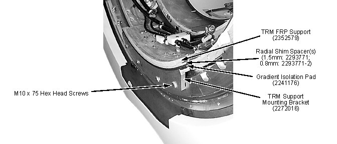

| NOTE: | Subsequent illustrations in this manual do not show the Support Mounting Bracket removed since removal was not necessary to adequately portray what needs to be shown. |
| NOTE: | At this point all passive shim trays are accessible for removal/replacement, except trays behind the two jack screws. |
Illustration 5: Support Mounting Bracket
